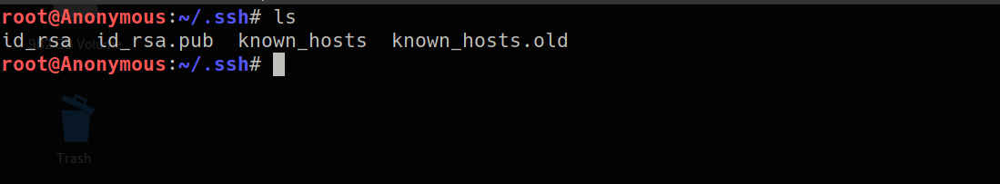
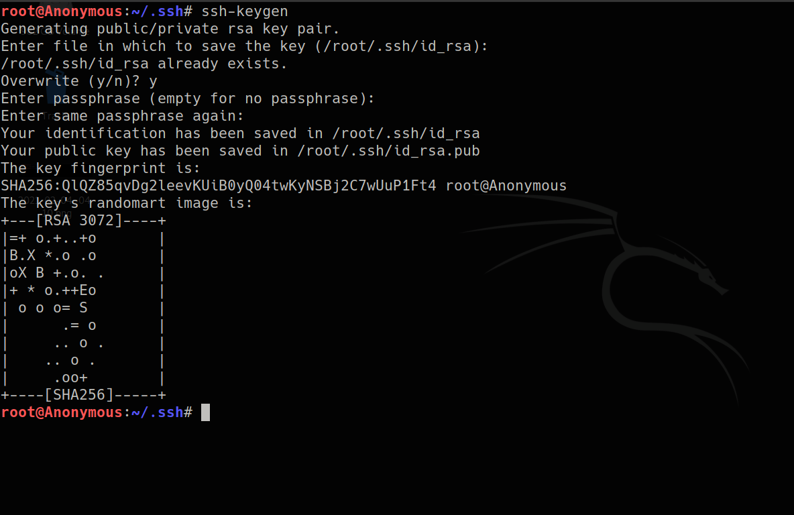
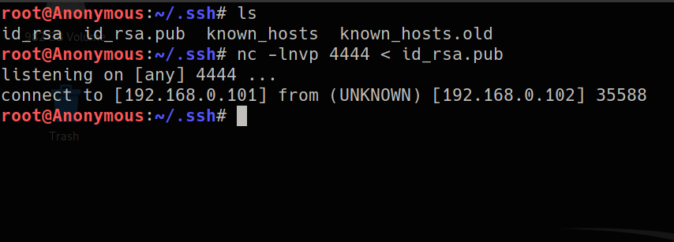
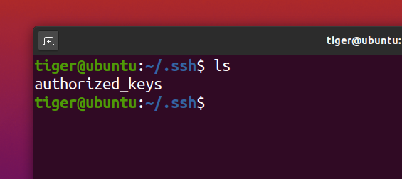
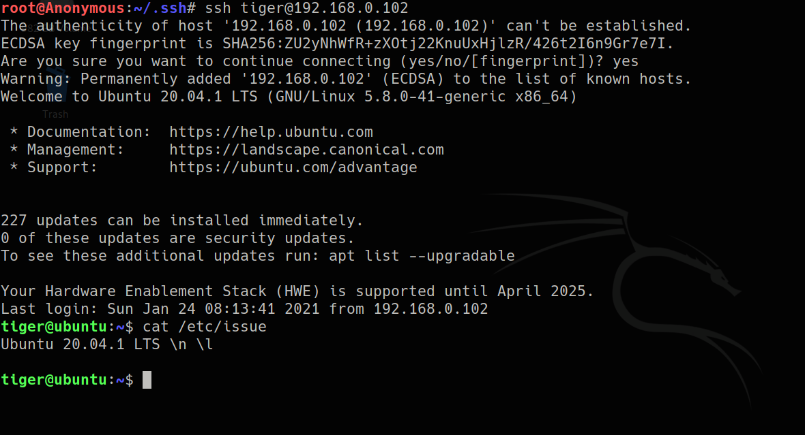

UNDERSTANDING_PUBLIC-PRIVATE_KEYS
SSH key Setup Overiview
⇒ Generating RSA Key-pair
⇒ Copy the Public Key to the Target machine with SSH running
⇒ Connecting to the Target machine using SSH keys
PUBLIC PRIVATE
----
can be copied to target machine and we can SSH into target machine without a password prompt
.ssh folder contains
some files such as known_hosts etc..
ssh-key gen command is used to generate the public and private key fair
• id_rsa → Private Key
• id_rsa.pub → Public Key
and we are also prompted for a passphrase which we can choose for our private-key that is we would need this phrase if we wanted to access or use this private-key
we need to copy the public key to the remote machine...to which we want to connect to using SSH directly...so here we have a ubuntu machine as our Target!
what we need to do is copy the id_rsa.pub or the public key to target machine and then rename it to authorized_keys and then we should be good to go
Lets do it
------
and now its time to connect to target using SSH
we will also change the permissions using chmod 400 authorized_keys
and we were able to directly SSH into the ubuntu machine without a password prompt